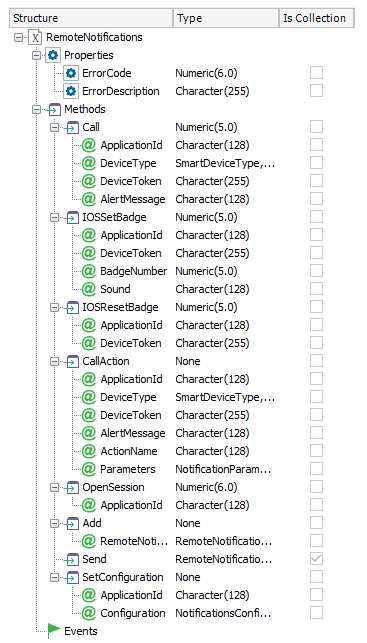

Remote Notifications External Object
Deprecated: Since GeneXus 15 Upgrade 3. Replaced by Notification Provider API.
Push Notifications in Smart Devices Applications are sent using this External Objects for Smart Devices.  Send NotificationsIf you need to send notification or a list of Notifications, you can use the Add and Send methods in conjunction. 1 First, you need to create a list of RemoteNotification objects and add them to the Notifications local variable using the Add method. Then use the Send method to deliver the notifications and check the return value (a collection of RemoteNotificationResult objects).
For instance, the following code section loads a list of Notifications which are sent with the Send method; the result is validated.
&ErrCode = &Notifications.OpenSession('SampleNotifications') //Name of Dashboard or SDPanel which enabled notifications.
for each
&RemoteNotification = new()
&RemoteNotification.DeviceType = DeviceType
&RemoteNotification.DeviceToken = DeviceToken.Trim()
&RemoteNotification.Message = 'Remote Message'
&RemoteNotification.Badge = '1'
&Notifications.Add(&RemoteNotification)
endfor
&RemoteNotificationResult = &Notifications.Send()
for &i = 1 to &RemoteNotificationResult.Count
msg(&RemoteNotificationResult.Item(&i).ErrorDescription, status)
endfor
Note: OpenSession and Send methods must be invoked outside the loop that loads the devices on the Notifications collection (i.e. based on RemoteNotifications external object). Error Codes
Execute an event on the DeviceMany times sending a Push Notification to invoke the application is not enough, our users expect that an action is executed when they open the received notification. For example, when you get a Push Notification on the Facebook App that Rachel wants to be Friends with you and you execute the push notification, is not enough to open Facebook App, you expect to open the dialogue to accept or decline Rachel friend proposal. To do that with GeneXus you need to:
1. Setting the Event NameThis is done using the Event node of the RemoteNotification SDT. Domains definitions
Code sample The developer can define on a Web Panel the following event in order to send a notification to all the registered devices.
Event 'RemoteNotification'
&ErrCode = &Notifications.OpenSession('MySDMainObject')
For each
&RemoteNotification = new()
&RemoteNotification.DeviceType = DeviceType
&RemoteNotification.DeviceToken = DeviceToken.Trim()
&RemoteNotification.Message = "Look at this new product!"
&RemoteNotification.Event.Name = 'ViewProduct'
&RemoteNotification.Event.Execution = EventExecution.OnLauchByUser
&Parameter.Name = "Product"
&Parameter.Value = &ProductId.ToString()
&RemoteNotification.Event.Parameters.Add(&Parameter)
&Notifications.Add(&RemoteNotification)
Endfor
&RemoteNotificationResult = &Notifications.Send()
for &i = 1 to &RemoteNotificationResult.Count
msg(&RemoteNotificationResult.Item(&i).ErrorDescription)
endfor
Endevent
In this sample, the &Parameter variable is based on RemoteNotification.Event.Parameter SDT.
An alternative to send notifications is through Call or CallActions methods (poor performance for batch sending, use Send method instead).
Event 'RemoteNotificationCall'
For each
&RemoteNotification.Call('MySDMainObject',DeviceType,DeviceToken,"Look at this new product!")
Endfor
Endevent
Event 'RemoteNotificationCallActions'
For each
&RemoteNotification.CallActions('MySDMainObject',DeviceType,DeviceToken,"Look at this new product!",&NotificationParameters)
Endfor
Endevent
where &NotificationParameters variable is based on NotificationParameters external object.
2. Define the Event on the Main AppIn order to execute the Event previously defined when the user taps on the notification message, you need to set that event on the Main object app. 2.1 Define Notification Event on SD Panels / WWSDDefine a new Action with the exact name of the Event Name field of the RemoteNotifications SDT variable. If the event receives parameters, you need to define variables with the exact name of the Parameters Name field of the RemoteNotifications SDT variable. Code Sample
Event 'ViewProduct'
Composite
&ProductId = &Product.Trim().ToNumeric()
WorkWithDevicesProduct.Product.Detail(&ProductId)
Endcomposite
Endevent
2.2 Define Notification Event on DashboardsFirst, add the notification node: Add an action to the Notification node: This will add an action that is not going to be visible on the dashboard, but you can invoke it from the push notification, putting its name on the Event Name field of the RemoteNotification SDT. The event of this action will be executed when the push notification is invoked on the device.
Set a Badge on the Application iconAnother option when sending a Push Notification is to display a number on the application icon. The badge is the number within a red circle that appears on an application’s home screen icon. The badge is used to denote the number of unread or otherwise unattended-to pieces of content within the app, e.g., unread messages, top news stories or waiting for actions inside the application. For this scenario, you need to set the value you want to show to the user in the Badge field of the RemoteNotification SDT and send that notification. Also, if it is needed to reset this number you can send a push notification with an empty badge. NOTE: Badges only exist in iOS apps.
Notes
Availability1 Add, Send and SetConfiguration Methods of the Notifications External Object are only available for .NET as of GeneXus X Evolution 3
|